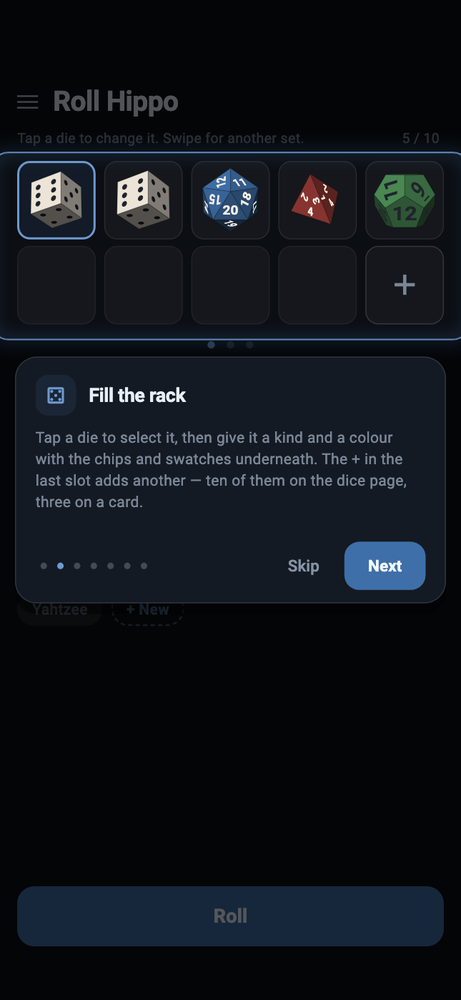

Roll Hippo — user guide
Roll Hippo gives you a roll two ways. Deal a card from a shoe holding every outcome your dice could produce, or throw the dice themselves — you choose the set-up once, then hold the phone upright, shake it, set it down and read what it says. This guide covers every screen, every gesture and every setting.
Getting started
Open the app and you are on the picker. It starts on the default, two white six-sided dice, and any set-ups you have saved are listed as a row of profiles underneath it, so opening one is a single tap rather than a question asked before you can see anything.
The very first launch is the one exception: a short tour runs over the top of the picker, and it is the only thing the app ever puts in front of you unasked. Skip it or finish it and every launch afterwards is the picker, straight away, every time.
There are four screens in all. The picker is where everything is chosen, and it has two pages: a set of dice, or a shoe of cards standing in for one. Whichever page you are on is what the button along the bottom does — it reads Roll or Deal — and it takes you to the screen that matches, the tray or the card table. The fourth is the scanner, which reads someone else's set-up off their screen.
The guided tour

The first time you open Roll Hippo, a short tour runs over the top of the app: seven cards, one idea each. Swipe the card sideways for the next one, or tap Next, or tap any of the dots to jump straight to it. Skip leaves at any point and Done closes the last one.
It is not a slideshow of pictures. Each card is said in front of the screen it is describing — the card page, the dice page, or a tray with dice actually in it — and the one thing it is naming is the only part of that screen left lit. The tray is real, too: on the card about throwing, shaking the phone throws the dice behind it.
Seven cards, in the order you would use the app:
- the two pages — dice and cards — and the swipe between them;
- the rack, and how a die gets its kind and its colour;
- profiles: + New to keep a set-up, and the press-and-hold menu behind every one of them;
- Roll and Deal, and which of the two the button is;
- Throw and Draw, and the shake that does the same thing;
- the three separate sets, and the swipe between them in the tray;
- the menu at the top left, and motion control inside it.
Nothing in the tour changes anything. Only the card of words takes taps — the screen behind it is there to be looked at rather than used — and the dice and the shoe it demonstrates with are the tour's own rather than yours. Your saved profiles are the exception, and deliberately: the card about profiles shows the row you actually have. Whatever you had on the picker is exactly where you left it when the tour closes, and no profile is written.
To see it again, open the menu at the top left of the picker and choose How to use, at the bottom. The app only ever offers the tour by itself once; after that it is one tap away and never in the way.
Setting up your dice

The rack at the top of the picker is your set of dice — two rows of five, filled left to right, up to ten.
- Add a die by tapping the large
+in the first empty slot. - Change a die by tapping it. The editor opens underneath, showing which one you have hold of — "Die 3 — D20", say.
- Choose its kind from the row of chips: D4, D6, D8, D10, D12 or D20.
- Choose its colour from the row of swatches above the chips. Each die carries its own, which is what lets you tell one from another once they are all on the floor of the tray.
- Take one away with Remove, at the right of the editor's heading.
When the rack says what you want it to say, tap Roll at the bottom of the screen. That opens the tray with the dice already thrown.
Why ten? The dice drop in from the top of the tray on a grid spaced by their own width, so that no two ever start inside each other. Past ten there is no longer room in a tray this size to do that.
Rolling

Hold the phone upright and shake it. The dice are thrown, they bounce off the walls and off each other, and they settle. There is no threshold to beat and no gesture to learn: the tray is simulated in the phone's own frame of reference, so tilting pours the dice down the screen and shaking throws them, and both are the same reading arriving from the same sensor.
If your hands are full — or if you have turned motion control off — the Throw button at the top right does exactly the same thing. Close takes you back to the picker.
On a phone that has one, the tray taps back. Each knock you feel is a real wall impact, and its strength is the impulse that die actually delivered — so a D20 arriving hard registers harder than a D4 drifting into a corner.
Reading and holding
A die that has settled on a tray held upright is showing its number to the ceiling and its edge to you. It is genuinely there and genuinely unreadable. So once everything has stopped, Roll Hippo lifts the dice off the floor, turns each one until the face it landed on is square to the glass, and lays them out on a grid.
Nothing is chosen when this happens. The face is read off the orientation the physics arrived at, and only then is the die turned so that you can see what it already said.
- Tap a die to hold it. A held die is pinned: it keeps its number, it is not thrown by the next shake, and the rest of the tray bounces off it as though it were part of the wall. Tap it again to let it go.
- Tap the empty space around the dice to put the whole formation back down on the floor of the tray, and tap again to bring it back up.
Holding is what you want for a game where some dice are kept and the rest re-rolled. Throw, tap the ones you are keeping, shake again — the held ones stay exactly as they are.
Three separate sets

The picker can hold up to three separate sets of dice. The dots beneath the rack say which one you are editing; swipe the rack sideways to reach the others.
In the tray, the same swipe moves between them — and each set keeps its own result. A set you are not looking at is not simulated at all, which means the numbers it rolled stay the numbers it rolled. Swiping cannot shake them, and neither can anything happening in the set next door.
A set you have not thrown yet is waiting for you: its dice are already lying on the floor, and it rolls when you shake it or press Throw.
The card table

Swipe the picker's editor panel sideways — or tap the second of the two dots below it — for card mode. It is the picker's other page rather than a corner of it, and an alternative to the dice rather than a substitute for it: every card in the shoe carries one possible outcome of the dice it stands for, so dealing one is the same wager as throwing them.
- How many dice a card stands for: one, two or three. Three is the limit because a shoe holds every outcome — two dice is 36 cards, three is 216, and four would be more than a thousand.
- How many decks are shuffled together, up to three.
- Where the shoe is cut: the percentage left when it reshuffles.
- What colour each die is printed in on the card, chosen one die at a time exactly as on the rack.
On the table itself, Draw turns the next card over, and a shake does the same if motion control is on.
A shoe is not a pair of dice, and that is the point. It holds every ordered outcome — 1-2 and 2-1 are two different ways for a pair to land where snake eyes has only one, so a deck holding each pair only once would make every double twice as likely as it is. It differs from rolling in the one way a shoe always does: cards are drawn without replacement, so what has gone is gone until the cut comes round, and that is the whole reason to reach for one.
Saved profiles

Beneath the editor is Profiles — the set-ups you have saved, each under a name you chose.
- + New saves what is currently on screen as a new profile and asks what to call it.
- Tap a profile to open it. The title at the top of the screen becomes Roll Hippo — <name>.
- Press and hold a profile for its menu: Save (write what is on screen into that profile), Rename, Share (see below) and Delete.
- Press and hold + New for Reset, which puts the picker back to the set-up the app opens with — two white six-sided dice in one set, nothing in the other two, and the dice page. Your saved profiles are not touched; only the screen is. Its menu has a Share too.
Nothing saves itself. Editing the rack changes what is on screen and touches no saved profile at all. The lit profile tells you which one you opened, not that the screen still matches it — so to keep a change, hold the profile down and choose Save.
A profile also remembers which mode it was saved on, so one saved on the card page opens on the card page.
Sharing and scanning

Share is on the menu a profile gives you when you press and hold it, beside Save, Rename and Delete. It turns that profile into a QR code: every die, its kind and its colour, which page you are on, the shoe you built, and the name it is saved under.
A saved profile shares what it holds, not what happens to be on screen — so a profile you have edited without saving still shares the version you kept, and the name on the code always describes the dice inside it. + New has a Share of its own, and that one sends what is on screen at that moment, with no name attached.
Scan is in the menu button at the top left of the picker, alongside Settings and How to use. It opens the camera and reads a code. What happens next depends on the name the code carries:
- A code with no name simply opens, unnamed.
- A code whose name you already have, and which matches what you have saved, opens without a word.
- Anything else asks you first.
No network is involved at any point. The code is the data — it is read off the glass by a camera, and nothing is fetched.
Settings
Settings is the first entry on that same menu — Settings, Scan, and How to use — and it has two controls.
Motion control
On — which is the point of the app — the phone's own movement drives the tray: tilt to pour the dice down the screen, shake to throw them.
Off, the tray is handed a phone that is holding perfectly still. Down is down the screen and stays there, a shake does nothing, and Throw — or Draw, on the cards — is the whole of the interface. It works exactly as it always did.
This is a real setting rather than an accessibility afterthought. A phone flat on a table, a hand that cannot shake one, a game being played on a train — all of them want the dice and none of them wants the accelerometer.
Haptic strength
How hard the phone taps back when a die hits a wall. Dragging the slider plays each notch back at the strength an ordinary throw would produce, so you are comparing sensations rather than reading a number. All the way down is off.
How the number is decided
Roll Hippo does not pick a result and animate towards it. Each die is thrown with a uniformly random orientation and a randomised speed; from that moment on it is a rigid body in a physics simulation, and where it stops is where it stops. The value you read is read off the die's own orientation once it has settled — the face that finished pointing up, or, for the D4, the face it came to rest on, because a tetrahedron at rest has a vertex pointing at the sky and no face at all.
Three things make that a fair reading rather than a decorative one:
- Every solid is isohedral — each face the same distance from the centre — which is what makes a die fair in the first place.
- Each shape's inertia tensor is computed from its own geometry by decomposing the solid into tetrahedra, not copied from a table. A die whose inertia is wrong is a loaded die.
- Every die is built to the same width across its widest point and given the mass its own volume implies, so a D20 really is heavier than a D4.
The dice are also bevelled, and collision treats them as the polyhedron inflated by that bevel — which is why they roll over an edge onto the next face instead of landing on a corner and stalling. Real dice are made that way for the same reason.
Privacy
Roll Hippo makes no network calls. There is no account, no sign-in, no analytics, no crash reporting, no advertising and no update ping. Your saved profiles and your two settings are stored on the phone, by the phone, and go nowhere else.
The camera is used for exactly one thing — reading a QR code you point it at — and only while the scanner is open. No image is stored or transmitted.
The app works with the SIM removed and in aeroplane mode, because there is
nothing for it to reach — the Android release package is built without the
INTERNET permission at all.
The full statement is on Roll Hippo's privacy page: what is stored, what each permission is for, and what the app stores themselves see.
If something looks wrong
Shaking does nothing
Check Motion control in Settings. With it off, the tray deliberately ignores the phone and Throw is the only way to roll. The prompt on an unthrown tray tells you which of the two you are in: it reads "Shake to roll" or "Tap Throw to roll".
I skipped the tour
Open the menu at the top left of the picker and choose How to use. It starts again from the first card, as many times as you like.
A die will not re-roll
It is being held. Tap it once to release it. Held dice survive every throw until you tap them again.
My changes disappeared
Editing the picker does not write to a saved profile. Hold the profile down and choose Save, or use + New to keep the change as a profile of its own.
The screen will not rotate
That is deliberate, and it is not cosmetic. The walls of the tray are fixed to the screen while gravity comes from the accelerometer, so a screen that re-oriented as you tipped the phone would swing the tray out from under the dice while down carried on pointing the same way.